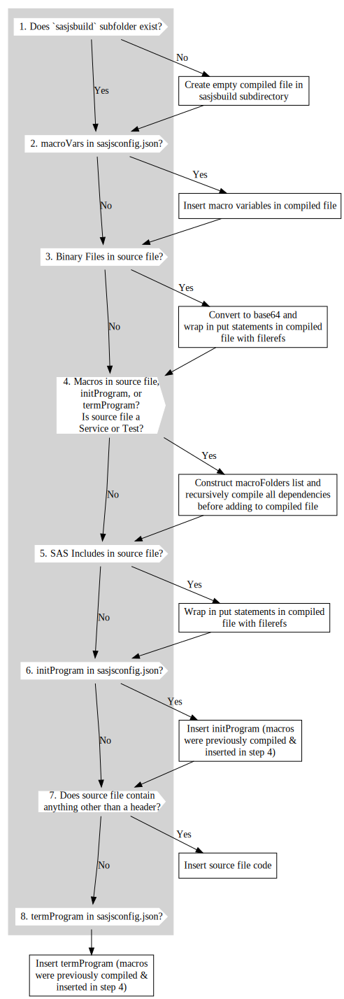

sasjs compile¶
Overview¶
Compilation in SASjs is driven from the sasjs/sasjsconfig.json file, and results in the creation of a single self-contained SAS program per JOB / SERVICE / TEST.
The benefits of working with compiled files are severalfold:
- Build on ONE platform, deploy to THREE (Viya, EBI, Base)
- Elimination of SAS Catalogs for macros / programs
- Elimination of filesystem dependency for code
- Resilient and Highly Portable Applications
- Consistent Performance
- Easy to debug & test
sasjs compile can be applied to a single file, or more commonly, to all the files in a project.
Content is added to each compiled Job/Service/Test in the following order:
- MacroVars
- Binary Files
- Macros
- Programs
- initProgram
- Job/Service/Test
- termProgram
The following diagram illustrates the compilation of a Service (service_xyz.sas) that includes some macro variables, as well as common macro dependencies across the initProgram and termProgram:

Notice that only one copy of the macro is inserted, even though it is defined in multiple artefacts.
The following diagram illustrates the logic flow when compiling a Primary Artefact:

1. sasjsbuild Folder¶
In every SASjs project, content is split according to whether the file type is Job, Service or Test. For a project that has all three, and has tests covering SAS Macros / Jobs / Tests, the sasjsbuild folder (and ultimately, the remote SAS folder) will contain the following tree:
jobs/services/tests/jobs/tests/macros/tests/services/
Below the above, the immediate child will be the last child of the xxxFolder - eg for a serviceConfig as follows:
{
"serviceConfig":{
"serviceFolders":[
"/some/project/location"
]
}
}
A filepath of /some/project/location/myservice.sas will thus be compiled inside: services/location/myservice.sas.
Nested directories are supported. For a filepath of /some/project/location/subfolder/subsubfolder/here.sas the compile location would be: services/location/subfolder/subsubfolder/here.sas.
2. Macro Variables¶
Macro variables are inserted according to the type of the compiled file, ie from one of the following objects:
jobConfigserviceConfigtestConfig
3. Binary Files¶
Binary Files are converted to a base64 string and wrapped in put statements with a user provided fileref as described here
4. SAS Macros¶
SAS Macros are recursively compiled to ensure there is only one copy of each macro across the initProgram, termProgram, the primary artefact itself, and the webout() macros (if a Service or Test).
More info here.
5. SAS Includes¶
SAS Includes are wrapped in put statements and a filename statement is generated with a user provided fileref.
More info here.
6. initProgram¶
The initProgram executes right before the main Job / Service / Test.
More info here.
7. Source Code¶
This section contains the actual code inside the Job / Service / Test.
More info here.
Compile Single File¶
When compiling a single file, it is necessary to state whether the file is being compiled is a job, service or test (as these file types are compiled with differing pre-code).
Syntax¶
sasjs compile <action> [additional arguments]
action can be job or service or test
Additional arguments include:
--source(alias-s) - the path/name.ext of the individual source file to compile (as job or service). MANDATORY--target(alias-t) - The target to use for obtaining the source folders of programs and macros. If it is not specified, the default target will be used, mentioned insasjsconfig.json. The target can exist either in the local project configuration or in the global.sasjsrcfile. OPTIONAL--output(alias-o) - path where output of the compiled job or service will be saved. OPTIONAL. If not provided, the output will go to the root of thesasjsbuildfolder if in a project (sasjsbuildwould be emptied first), else in the current working directory.
sasjs compile job -s sasjs/jobs/admin/somejob -o compiledjobs/folder
sasjs c service --source sasjs/services/common/appinit -t myTarget
Compile Project¶
Syntax¶
sasjs compile [additional arguments]
Additional arguments include:
--target(alias-t) - The target to use for obtaining the source folders of programs and macros. If it is not specified, default target will be used, mentioned insasjsconfig.json. The target can exist either in the local project configuration or in the global.sasjsrcfile. OPTIONAL
Examples:
sasjs compile
sasjs c
sasjs c -t someTarget
Artefact Compilation¶
From the root of the project, run: sasjs compile. This will cycle through all the Jobs / Services / Tests in the jobFolders / serviceFolders / testFolders arrays in the sasjsconfig.json file, extract all of the dependent Binary Files, SAS Macros, SAS Includes, and create one self-contained file per Job (or Service, or Test) inside the sasjsbuild folder. The self-contained file will also include any initProgram, termProgram and macroVars defined in the relevant config objects.
The binaryFolders, macroFolders and programFolders arrays are searched for Binary Files, SAS Macros and SAS Includes (first in the target config, then in the root).
The serviceConfig, jobConfig and testConfig objects may have attributes split at either or both target and root level in the sasjsconfig.json file.
Tests compilation¶
As part of compilation process test files will be compiled as well. Test configuration should be provided in sasjs/sasjsconfig.json. Test files should be placed in the same folders with services, jobs and macros. Compiled test files will result in sasjsbuild/tests folder under services,jobs or macros subfolder respectively. Tests execution flow will be described in sasjsbuild/testFlow.json file.
The testConfig object allows two additional programs to be compiled (as tests):
testSetUp- executed once at the beginning of the test runtestTearDown- executed once, at the end of the test run
SyncFolder Compilation¶
If the syncFolder attribute is set, then the contents of that folder will be simply copied into the sasjsbuild folder. This is useful for providing mocked services (eg in sasjs/server) or to add arbitrary content to the SAS logical folder tree.
Streaming Apps¶
If streamWeb is true, then the index.html file in your webSourcePath is also scanned and any linked JS / CSS files are also compiled into the streamWebFolder folder. The index.html becomes a clickme service in your appLoc SAS folder root.
Base64 encoding¶
If you don't have an index.html and you just want to compile arbitrary binary content (such as images, mp3, excel files etc) as base64 services, set the location of the content in assetPaths. All files in the specified folder(s) will be turned into web services.